プライベートツリー編集
「プライベートツリー編集」タブをクリックするとプライベートツリー編集画面が表示されます。
プライベートツリーの新規作成、編集、移動、削除を行うことができます。
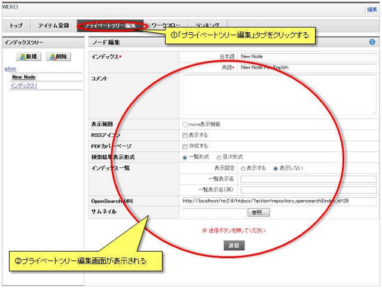
プライベートツリーの新規作成、編集、移動、削除を行うことができます。
新規作成
インデックスを新規作成します。
「新規」をクリックするとルートプライベートツリー(インデックスツリー)直下に新規インデックスが作成されます。
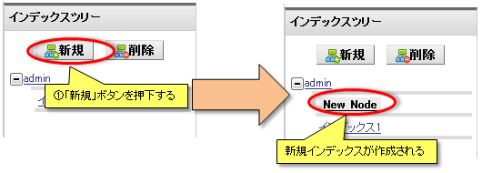
任意のインデックスをクリックして選択し、「新規」をクリックすると任意のインデックス直下にインデックスが新規作成されます。
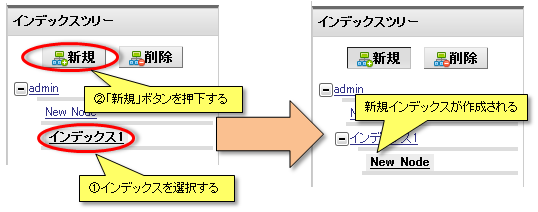
「新規」をクリックするとルートプライベートツリー(インデックスツリー)直下に新規インデックスが作成されます。
任意のインデックスをクリックして選択し、「新規」をクリックすると任意のインデックス直下にインデックスが新規作成されます。
編集
インデックスの情報を編集します。
インデックスの情報を編集し、「送信」ボタンをクリックすると編集内容が反映されます。
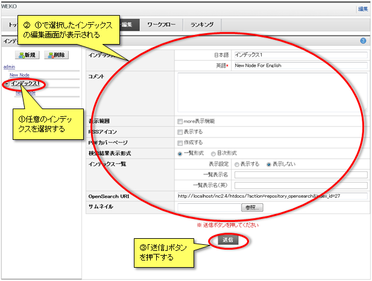
インデックスの情報は下記のとおりです。
【注意事項】
インデックスの情報を編集し、「送信」ボタンをクリックすると編集内容が反映されます。
インデックスの情報は下記のとおりです。
| 項目名 | 概要 |
|---|---|
| インデックス |
インデックス名を設定します。 日本語：サイトの表示言語が日本語の時に表示されます。 英語：サイトの表示言語が日本語以外の時に表示されます。 |
| コメント |
インデックスにコメントを設定します。 コメントは「インデックスリスト」に表示されます。 |
| 表示範囲 | 親インデックスに子インデックスの初回表示個数を設定することができます。 |
| RSSアイコン |
「インデックスリスト」に表示するRSSアイコンの表示/非表示を設定します。 「表示する」にチェックがある場合、インデックスリストに「RSSアイコン」が表示されます。 |
| 検索結果表示形式 |
検索結果の表示形式を選択します。 「一覧形式」 検索結果をアイテムの一覧で表示します。通常はこの形式で設定されています。 「目次形式」 検索結果を見出しの一覧で表示します。 |
| インデックス一覧 |
トップページのインデックス簡易アクセスUIへの表示を設定します。 「一覧表示名」、「一覧表示名(英語)」 インデックス簡易アクセスUIに表示させるインデックス名を設定することができます。 未入力の場合はインデックス名が表示されます。 |
| OpenSearch URI |
インデックス検索結果表示用URL。 |
| サムネイル |
インデックスのサムネイルを設定する。 検索結果の表示形式が目次形式の場合にサムネイルが表示されます。 また、検索結果の表示はインデックス検索結果画面をご参照下さい。 |
【注意事項】
- インデックスの英語名は必須入力です。
- 編集内容は「送信」ボタンをクリックしない限り反映されません。
移動
インデックスのドラッグ&ドロップでインデックスを移動することができます。
インデックスの移動では子インデックスも一緒に移動されます。
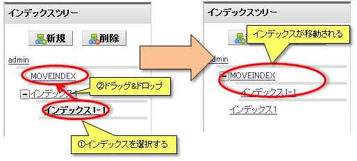
インデックスの移動では子インデックスも一緒に移動されます。
削除
インデックスを削除することができます。
ルートプライベートツリーは削除することができません。
任意のインデックスをクリックして選択し、「削除」をクリックすると任意のインデックスが削除されます。
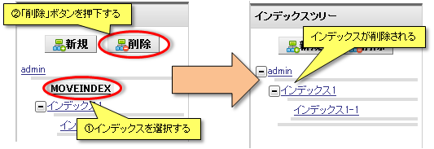
選択したインデックスに所属するアイテムまたは子インデックスが存在する場合、「削除」をクリックすると所属アイテムおよび子インデックスの処理について確認画面が表示されます。
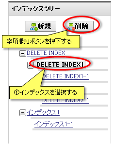
「すべて削除」を選択すると削除確認ダイアログが表示され、「OK」ボタンをクリックすると子インデックスおよびアイテムがすべて削除されます。
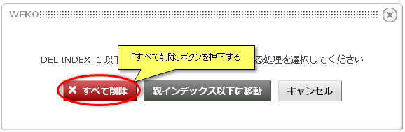
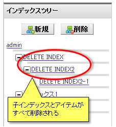
「親インデックスへ移動」をクリックすると、所属アイテムおよび子インデックスが親インデックス以下に移動されます。
ただし、「親インデックスへ移動」は選択インデックスがルートインデックス直下の場合は表示されません。
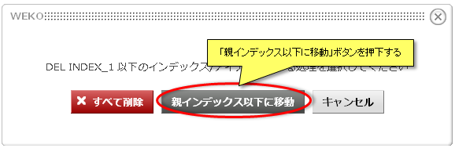
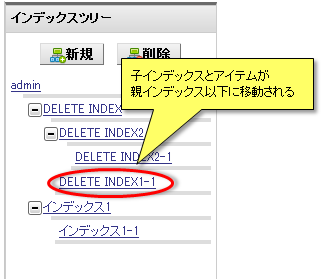
ルートプライベートツリーは削除することができません。
任意のインデックスをクリックして選択し、「削除」をクリックすると任意のインデックスが削除されます。
選択したインデックスに所属するアイテムまたは子インデックスが存在する場合、「削除」をクリックすると所属アイテムおよび子インデックスの処理について確認画面が表示されます。
「すべて削除」を選択すると削除確認ダイアログが表示され、「OK」ボタンをクリックすると子インデックスおよびアイテムがすべて削除されます。
「親インデックスへ移動」をクリックすると、所属アイテムおよび子インデックスが親インデックス以下に移動されます。
ただし、「親インデックスへ移動」は選択インデックスがルートインデックス直下の場合は表示されません。